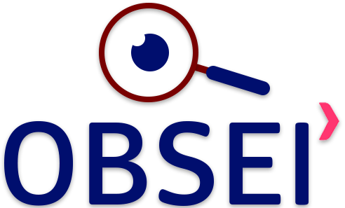

Conheça-nos
O Observatório do Empreendedorismo e Inovação (OBSEI) foi criado em 2017, como um projeto de pesquisa que tem sido implementado e desenvolvido por professores e pesquisadores da Faculdade SOCIESC de Blumenau. O OBSEI atualmente está inserido no grupo de pesquisa em Gestão e Tecnologia da Informação e Conhecimento, integrado ao conselho nacional de desenvolvimento científico e tecnológico (CNPq/DGP).